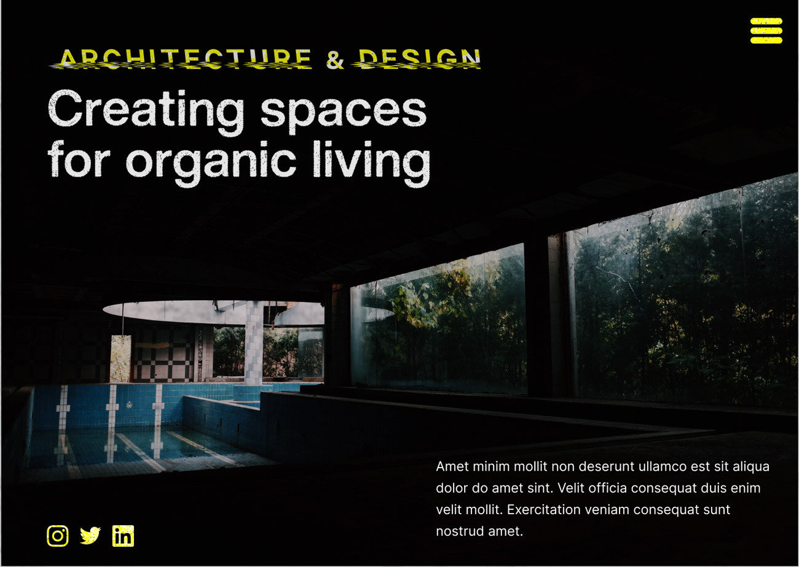
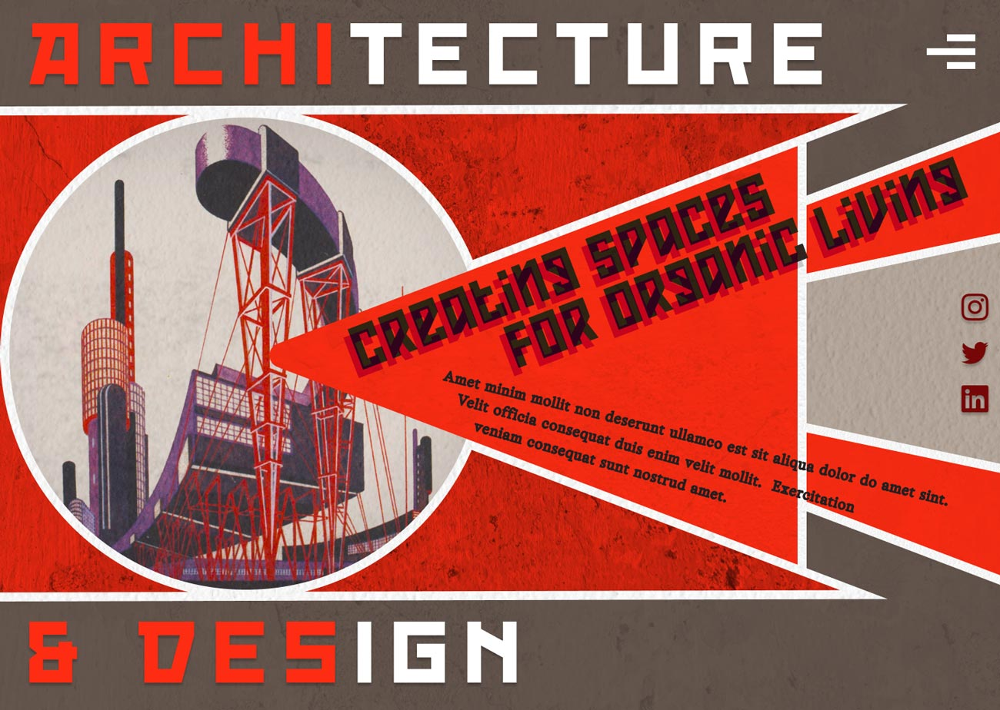

Generic Website
Click here to try the desktop prototype!
Click here to try the desktop prototype!
roject escription
These assignments were part of a series of themed design challenges for IDM 211 (User Interface Design I). We were tasked with reimagining, as the name implied, a generic architecture firm website in various styles, interpreting different aesthetics in our own way. The two themes we completed over the course of the class were “grunge” and “constructivism.”
Because of my unfamiliarity with these styles, some level of research was required before going in with my interpretation of each. In the end, this was both a learning experience and a fun way to get involved with different design themes.